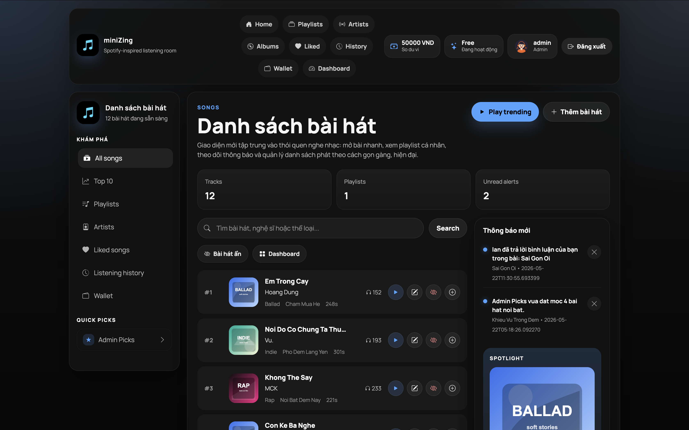
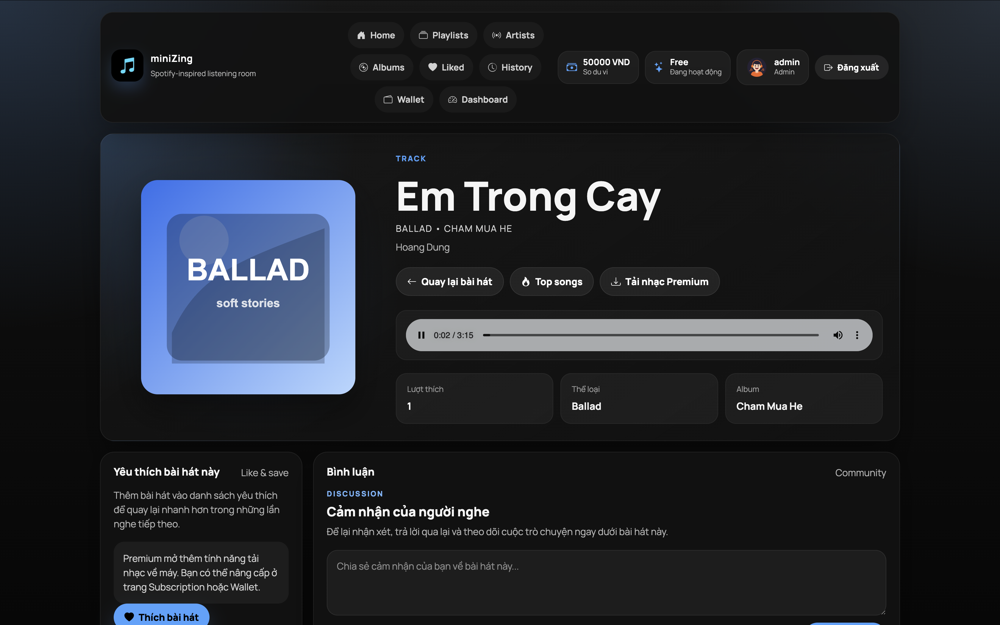
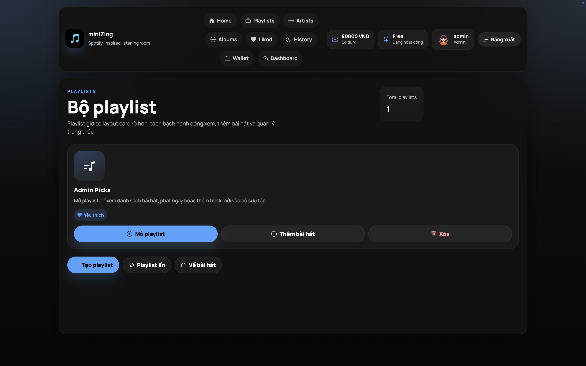
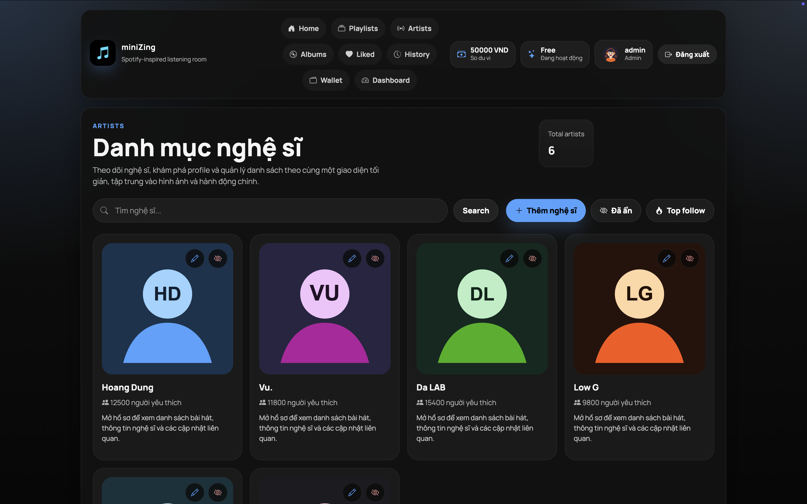
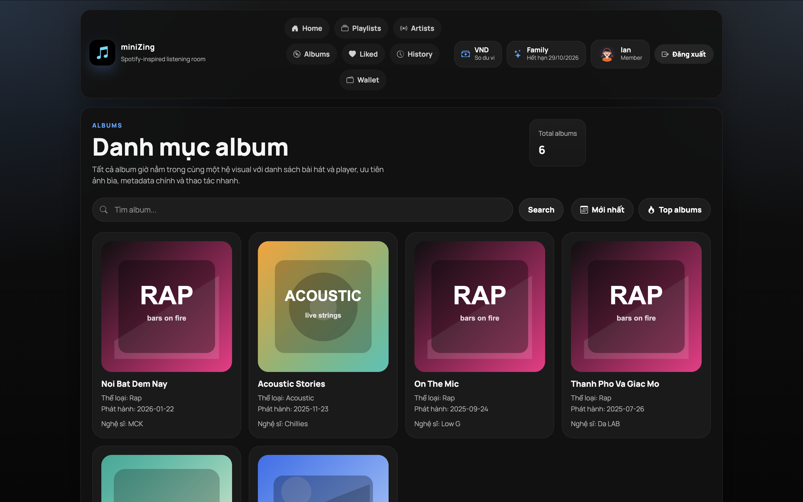

Song Dashboard
Track list, search, quick actions, notifications and listening spotlight in one focused screen.
Project Detail
Music Web
A localhost music platform built with Servlet, JSP and SQL Server for catalog browsing, playlists, listening history and admin management.
The Problem
A music application needs more than a list of tracks. Users expect browsing, playback context, playlists, liked songs, artist pages and account-specific history.
The project also needed an admin surface for managing songs, albums and artists while keeping the classic Java web stack organized around MVC boundaries.
Project Interface

Screens captured from the localhost Music Web application, so this project has no public live demo.
Product Screens

Track Detail
Audio playback, song metadata, like action and comment workflow for a selected track.

Playlist Management
Create playlists, open collections, add songs and manage hidden or favorite states.

Artist Catalog
Search and browse artists with profile cards, follower counts and admin controls.

Album Catalog
Album cards highlight cover artwork, genre, release date and associated artist metadata.
The Solution
The app follows a Java MVC structure with Servlets handling routing, JSP pages rendering views and DAO/service layers coordinating SQL Server persistence.
Core modules cover song catalog management, playlists, artists, albums, authentication, role-based admin workflows and local playback pages.
JSP Views
Dark music interface for songs, playlists, albums, artists and track detail screens.
Servlet Controllers
Request routing, form handling, session checks and admin/user action dispatching.
SQL Server
Relational storage for accounts, songs, albums, artists, playlists and user activity.